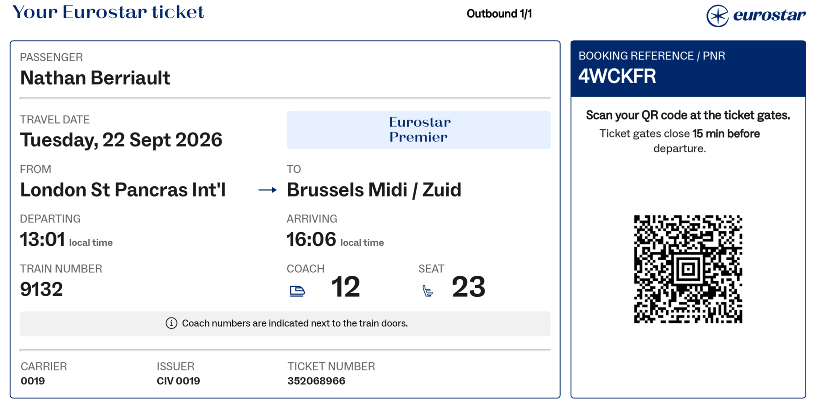
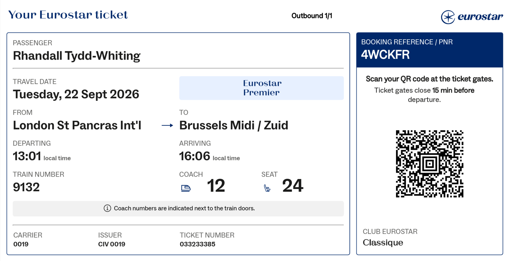

AIRLINE------------
DEPARTURE Wed Sep 16 @ 12:30pm (3:30pm)
YVR - Vancouver, term M
Booking: Z5NBXF
( Direct link )
Check-in: ??
Map
British Airways BA2278
+ WORLD TRAVELLER PLUS
Seats: 14D,E
Each:
+ Handbag & cabin bag
+ 2 checked bags, 50lbs (each?)
DEPARTURE Tue Sep 22 @ 12:16pm (1:01pm)
London St Pancras Int'l -> Brussels Midi / Zuid
Euston Rd., London N1C 4QP, United Kingdom
Map
Booking: 4WCKFR
( Direct link )
+ Eurostar Premier, train 9132
+ VIP meet & greet
+ Coach 12 - seats 53,54
+ Low fat meal.
Each:
+ 1 Handbag (backpack)
+ 3 luggage (up to 85cm long - London only).
Cancel: 48hrs _after(?) departure.

